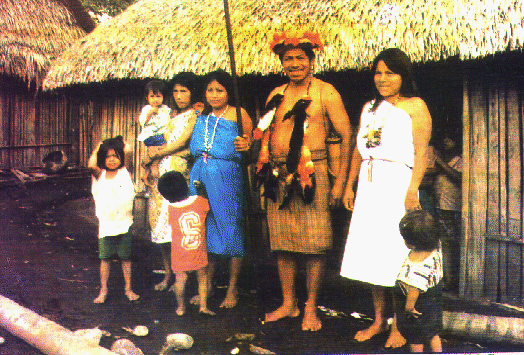

Así viven los Aguarunas del AIto Mayo
Revalorando el legado cultural de los antiguos peruanos
por Emigdio Soto Sierra
El autor de la presente, Soc. Emigdio Soto Sierra, trabajó varios años en las nueve comunidades nativas del Alto Mayo, (zona ubicada al norte del departamento de San Martín, donde se encuentran las provincias de Moyobamba y Rioja).Emigdio Soto estuvo en España entre los meses de febrero y marzo de este ano, como parte de una comitiva conformada por el alcalde de Moyobamba, Rubén Aspajo García, y un grupo de técnicos peruanos, por una invitación de la ONG española "Unión Iberoamericana de Municipalidades", en mérito a un convenio de cooperación que esta ONG tiene con la Municipalidad de Moyobamba, con respecto al desarrollo turístico y empleo juvenil, rubros en los que los españoles tienen las mejores experiencias.
En las presentaciones que la comitiva moyobambina tuvo en las distintas ciudades de España, Emigdio Soto expuso sobre la realidad indígena amazónica, especialmente de los aguarunas del Alto Mayo, desde la óptica de la revaloración del legado cultural de los antiguos peruanos.
La nota que publicamos a continuación es un resumen de todo lo expuesto por el autor en tierras españolas. A manera de introducción destacó el trabajo de la ONG "Aldea Perú", con sede en el país vasco (provincia vasca). "Gente de mucha emoción social que ha constituido esta ONG, con el fin casi exclusivo de apoyar a Moyobamba en lo que sea necesario y posible para ayudar en su desarrollo. Gesto muy loable que desde estas modestas líneas felicitamos".
Hay en el Alto Mayo, valle en el que se encuentran las provincias de Moyobamba y Rioja (departamento de San Martín), a pocos kilómetros de las capitales de éstas, un territorio otorgado en propiedad al grupo etno-linguístico Aguaruna.
El grupo Aguaruna llegó al Alto Mayo hace más de 100 años, asentándose en la parte nor oriental del valle, procedentes de la zona de Cahuapanas y del Marañón. A lo largo de varias décadas los aguarunas han ido ocupando la parte alta del río Huascayacu, posteriormente del río Mayo. Su ancestro Jíbaro les ha permitido subsistir culturalmente, tras muchos años de mantener contacto con la cultura mestiza.

Foto: Hugo Vela D.
En el Alto Mayo encontraron un vasto bosque que les permitió cazar, recolectar y seguir haciendo sus chacras a la usanza tradicional, vale decir rotando cada 10 años, después cada tres o cuatro años, como hacen actualmente. Esta es una valiosa modalidad de conservación del recurso suelo, por lo que la productividad de la tierra no se deterioraba. Conservaron el bosque y respetaron la armonía ecosistemática, fuente de vida de todas las culturas selváticas. Saben que la destrucción del bosque llevará inexorablemente a la desaparición de los grupos nativos como cultura.
Tradicionalmente no tuvieron una organización definida, pero respetaron niveles jerárquicos que fueron más efectivos que una institución actual. Su educación era realmente para la vida. Comenzaba a los cinco años. El padre enseñaba todas las mañanas los fundamentos de la vida: trabajo, respeto, valor, habilidades para la caza, sabiduría de la naturaleza, etc. A fines de la adolescencia, para integrar al joven a la vida adulta se realizaba el rito del ayahuasca, una sustancia alucinógena extraída de una planta del mismo nombre, que al beberla produce visiones. Así podía definir lo que iba a ser en su vida futura, si sería guerrero, cazador, etc.
La poligamia era permitida entre ellos. Significaba la capacidad de un hombre para mantener dos o más mujeres; o la confianza de un padre para entregar a dos o tres hijas a un buen aguaruna. Actualmente subsisten algunas de esta costumbres. Son los viejos o maduros y las mujeres en su mayoría los que se resisten a romper sus costumbres, fuente de su sabiduría.
Muchas de las costumbres ancestrales de los aguarunas se conservan, pero cada vez en un sector más reducido de la población. El bosque, sustento de su cultura se va perdiendo.
Las nueve comunidades (Huascayacu, Morroyacu, Shimpiyacu, San Rafael, El Dorado, Shambuyacu, Awajún, Alto y Bajo Naranjillo) se agrupan en la Organización Aguaruna del Alto Mayo -OAAM-. Ocupan un área de 60 mi hectáreas. La mayor parte de esta población es bilingüe. En total son 350 familias. Se organizan para la producción, capacitación y para planificar su desarrollo. Actualmente trabajan en la producción comercial cultivando arroz, maíz y café.
El Estado, a través del Proyecto Especial Alto Mayo les brinda atención al igual que a los demás pueblos de esta zona. Trabajan con créditos agropecuarios, mecanizan sus tierras, reciben asistencia técnica. Cuentan con escuelas, postas médicas, servicios de agua. A los nativos les capacitan en tecnología sanitaria. Se van insertando en la nueva dinámica de vida con algún éxito, muchas veces a costa de su identidad cultural.
Aspectos Folklóricos
Alimentación
La alimentación tradicional de los aguarunas se basa en proteína animal proporcionada por la carne de los animales del monte: sajino, majás, huangana, armadillo, mono, aves, peces, suris (gusanos que se extraen de algunos árboles).
El masato (bebida preparada con yuca sancochada, masticada, fermentada con la saliva de los niños y ancianas) siempre ha sido base de su alimentación. Actualmente hay poca carne del monte. Pocos peces. En la alimentación se está introduciendo el arroz, los fideos y aderezos. Habían potajes para cada ocasión. Por ejemplo, para ir a una faena fuerte se ingería un potaje preparado con maní y plátano sancochado, llamado michack.
Vestido
La vestimenta tradicional de los hombres era una especie de falda llamada itipac. El hombre la tejía con algodón. El vestido de la mujer cubría desde el cuello hasta los tobillos, con un hombro descubierto. Era el buchak. El vestido de la mujer subsiste. Algunos viejos usan aún el itipac, principalmente en las fiestas. El hombre usa coronas o tawas. Otros usan una especie de gorro con una cola hecha con piel de mono.
Utensilios Domésticos y Artesanías
La mujer hace tinajas para el masato, ollas de barro, platos, vasijas grandes y pequeñas.
El hombre teje canastas de todo tamaño con un bejuco o liana llamado tamshi. Hace sus asientos con madera; el del jefe es el shimpui y a los invitados a la casa les ofrece el kutac. También hacen peines, mochilas, telares, cerbatanas, lanzas, etc. Para comunicarse a distancia hacen un instrumento de percusión en un solo tronco de árbol llamado tuntui, parecido al manguaré.
Música, Danzas y Canciones, Instrumentos
Los aguarunas tienen dos instrumentos musicales importantes: la quena o pinkui y un tambor pequeño. Con una especie de brazalete de semillas grandes que se ponen en la parte superior de las rodillas, en los tobillos o simplemente sosteniéndole en las manos, producen un sonido que acompaña ritmicamente a los otros instrumentos. A estos acordes danzan los hombres y las mujeres en grupos separados. No hay baile mixto en la danza tradicional. Actualmente la introducción de la radio está sustituyendo la música aguaruna. Los viejos o muntas son los que sigucn practicando la música tradicional en las masateadas.
Sus canciones tienen un mensaje directo al trabajo, a la amistad y a otros valores. Hay canciones que los aguarunas cantan en circunstancias especiales. El anem nakubo tiene un contenido misterioso que infunde valor al que va de casería. La canción para la guerra és de un profundo sentimiento. Hay otras canciones cotidianas.
Vivienda
Sus construcciones son de carácter transitorio y mimetizado con el bosque. Son de muros de ponas, techos de palma, un solo ambiente grande para una familia extensa, ya que el padre no pierde la autoridad sobre los hijos, aunque estén casados. Estas construcciones duraban entre cinco y diez años. Cuando la casa se deterioraba era abandonada. También abandonaban la casa cuando moría algún miembro de la familia. Dejaban el cadáver en un altillo; pero solían visitar al difunto llevándole comida y masato, elementos que misteriosamente eran consumidos. No hace más de 15 años que se dejó esta práctica. El abandono de la casa denotaba una especie de nomadismo asociado al cambio de la chacra después del uso intensivo.
Fiestas
La fiesta tradicional más importante era la del tzanza o de ]a reducción de cabezas. El ritual reproducía la reducción de la cabeza de un enemigo vencido después de una guerra (encuentros entre clanes por motivo de invasión de zonas de caza, no territorios definidos, entre otras causas). El vencedor (kakjam) era el autor de la muerte.
Se celebraba la llegada del cazador con su cargamento de carne. Se bebía masato o nijamansh. Al hacer una casa o una chacra también había celebración; costumbre que aún se conserva. El dueño de la casa o de la chacra invita carne del monte y masato a quienes le ayudan. Esta forma de trabajo se llama ipaamamu.
Aunque no tienen marcadas las fechas de las fiestas, éstas se realizan generalmente en fiestas patrias, al término de las labores escolares y en inauguración de obras.
Los temas de las danzas son: encuentro de amigos, la curación de un enfermo y todos sus episodios.
También se celebran los nacimientos de los niños, el paso de la adolescencia a la vida adulta, fiesta muy especial que se da con el rito del ayahuasca, con el que el joven se iniciaba en el conocimiento de la vida, de la sabiduría, que era el jinta aibau o camino del conocimiento.
Mitos y Creencias. La Cosmovisión Aguaruna
El nativo vivió siempre en estrecho contacto con la naturaleza, en armonía con ella. Sus conocimientos básicos materiales, educativos, espirituales, nacían en el bosque. Éste era la extensión de su vida, su fundamento. Sergio Chang, decía: "si desaparece el monte, desaparece el aguaruna" (Estudio de cc.nn. 1,986). Esto es evidente. No hay más que revisar su vida productiva y todo lo que le rodean, vivienda, artesanía, vestido, medicina. La educación se daba para el manejo correcto de los recursos del bosque. El arte, la música, la poesía se desprendían del bosque. Los instrumentos musicales reproducían los sonidos del bosque; el viento y las letras de sus canciones, la vida cotidiana y su relación con la naturaleza.
El sol etsa, la fuente de vida de la cultura universal, era el sustento. El nugkui dios mitológico que enseñó a producir a los aguarunas y castigó a quien utilizó mal los recursos, era el padre de la producción.
Habían dos hermanas que eran malas, pero antes de morir se arrepintieron. El dios etsa las convirtió en plantas útiles: el achiote y el piyú. Sus frutos son utilizados hasta ahora para pintar vasijas de barro. El achiote da el color rojo y el piyú el negro. Sus leyendas afirmaban la conexión entre la vida del hombre y la vida del bosque. Las plantas no eran solo vegetales, eran vida humana prolongada en el bosque.
Con la progresiva desaparición del bosque, por el mal manejo o el mal uso que le dan los agricultores migrantes, se está yendo la vida de la cultura indígena de nuestra Amazonia.
El respeto del aguaruna y en general del indígena amazónico por el bosque, tiene un fin utilitario de subsistencia. En el bosque está su fuente de vida.
Para nosotros el bosque no tiene el mismo sentido directo, pero su influencia no está sólo en el entorno físico si no mucho más allá de lo que creemos. Allí están el sustento yel desarrollo de la medicina, la industria estética, la agroquímica. Tiene que ver también con los problemas de la corriente del Niño, con las drásticas modificaciones climáticas, con los fenómenos naturales como los huaycos, movimientos telúricos y otros que cobran miles de vidas cada vez con más frecuencia, y que guardan estrecha relación con los procesos en el bosque que se constituye en el más importante regulador del clima.
En el mundo nativo está la fuente de sabiduría de los llamados manejos sustentables, mientras desesperadamente se esbozan teorías buscando la clave para un mejor manejo del bosque.
El indígena ve con desesperación que cada vez hay menos animales en el monte. Tiene menos posibilidades de ingestión de este tipo de proteínas. ¿Se tendrán que resignar sólo a los productos sintéticos?; aunque éstos tienen sus orígenes también en el bosque.
Las políticas de desarrollo que se diseñen deben considerar fundamentalmente el bagaje nativo sobre protección y conservación del medio ambiente, antes de someterse a las "maravillas de la tecnología productiva". No se debe ver a los nativos como "pobrecitos", sino como el mensaje viviente de nuestros antepasados, que vivieron en las mejores condiciones precisamente por vivir en armonía con Ia naturaleza.